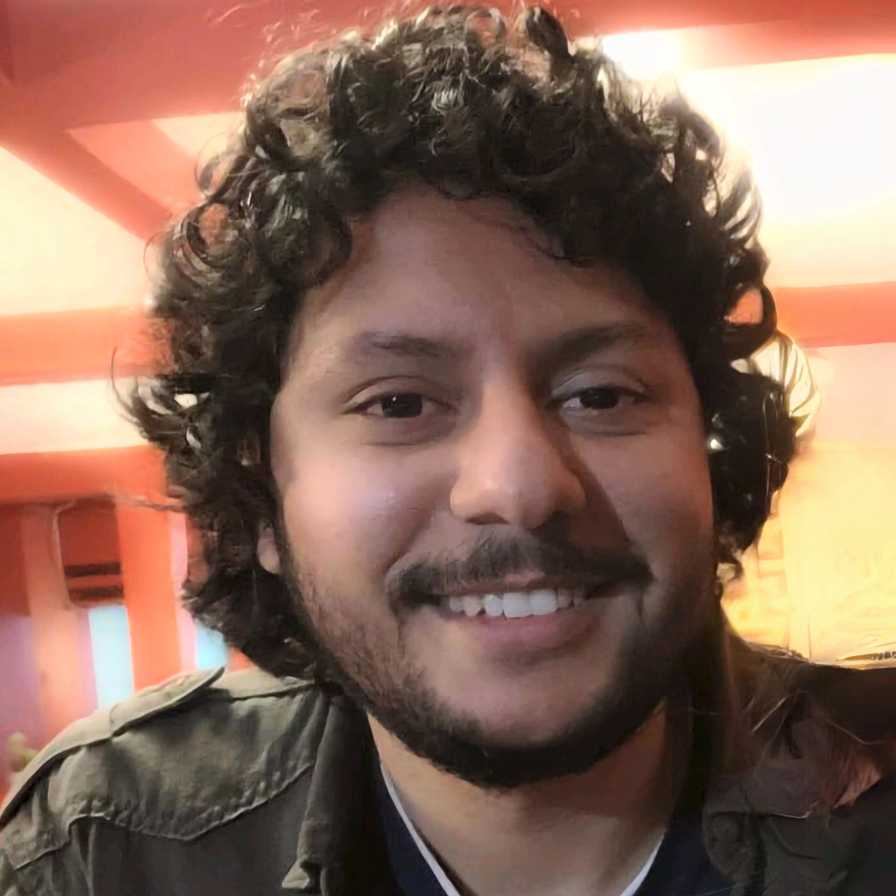
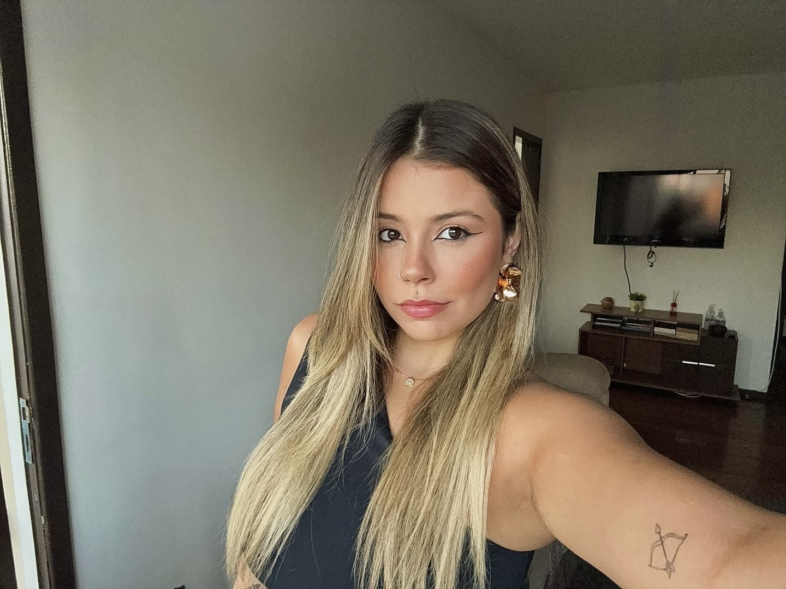
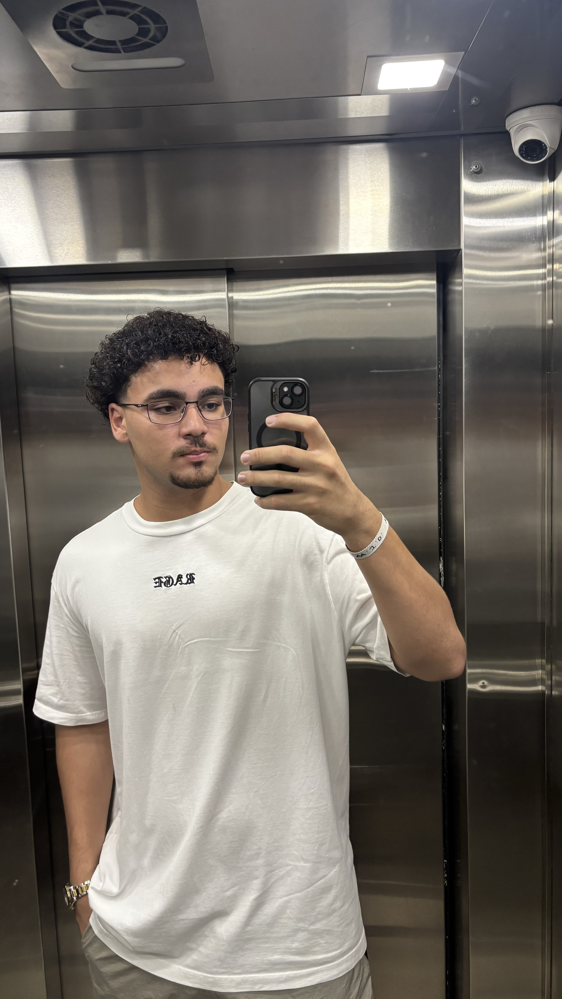
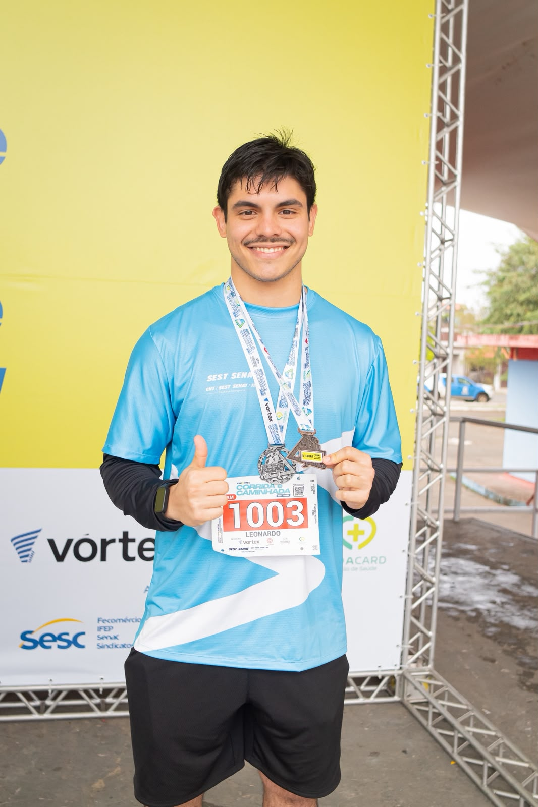
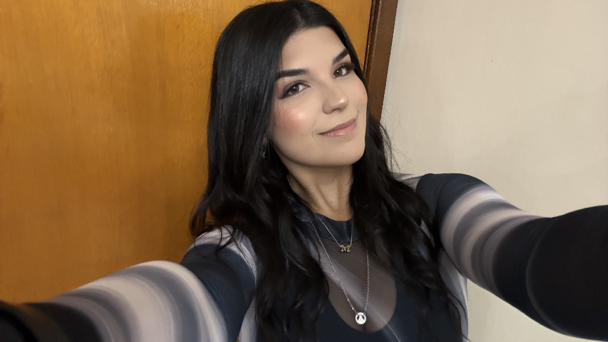
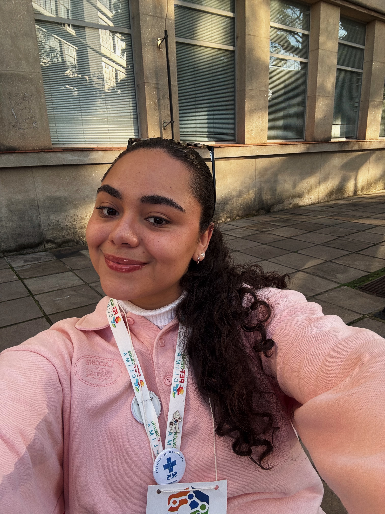

EQUIPE & ORGANIZAÇÃO
Comissão Organizadora
Coordenador Geral
Samuel Salvi Romero
UNIPAMPA - Campus Uruguaiana
Tutor Docente
Alexandro Gularte Schäfer
UNIPAMPA - Campus Bagé
Tutora Docente
Lisie Alende Prates
UNIPAMPA - Campus Uruguaiana

Preceptor
Helter Luiz da Rosa Oliveira
Rede Municipal de Saúde
Preceptora
Silvia Muller de Moura Sarmento
Rede Municipal de Saúde
Orientador de Serviços
Francisco Bortoluzzi Neto
Secretaria Municipal de Saúde

Monitora
Bruna da Costa Ribeiro
UNIPAMPA - Campus Uruguaiana
Monitor
Davi Lopes Lemos
UNIPAMPA - Campus Bagé

Monitor
Heduardo Witkoski Barcelos da Rocha
UNIPAMPA - Campus Bagé
Monitora
Jennifer Ferreira Guterres
UNIPAMPA - Campus Bagé

Monitor
João Pedro Marchesi Tavares
UNIPAMPA - Campus Uruguaiana
Monitora
Julia Dantas Arima
UNIPAMPA - Campus Uruguaiana

Monitor
Leonardo Porto de Bastiani
UNIPAMPA - Campus Uruguaiana
Monitora
Manuela Hubert
UNIPAMPA - Campus Uruguaiana

Monitora
Manuella Dutra Bortolazzo
UNIPAMPA - Campus Uruguaiana

Monitora
Maria Antonia Dutra Fernandes
UNIPAMPA - Campus Uruguaiana
Monitora
Sofia Delatorre Fonseca
UNIPAMPA - Campus Uruguaiana
Monitor
Valdir Paz Ribeiro Junior
UNIPAMPA - Campus Uruguaiana